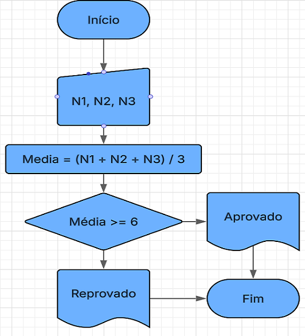
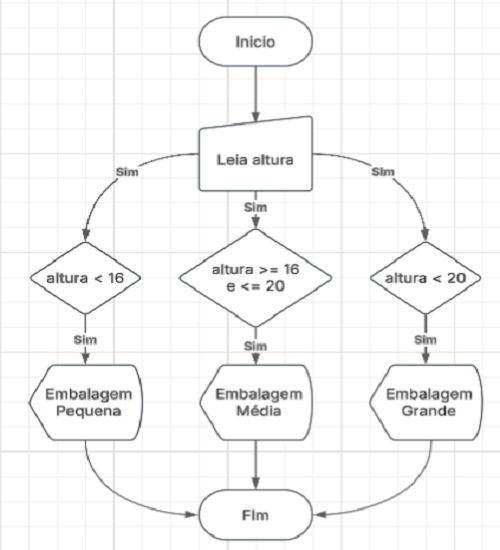
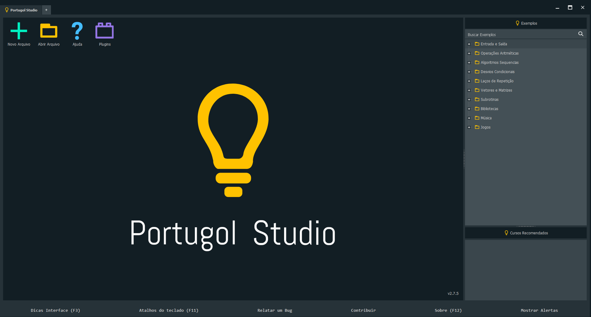
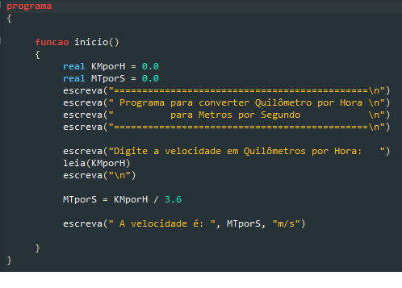
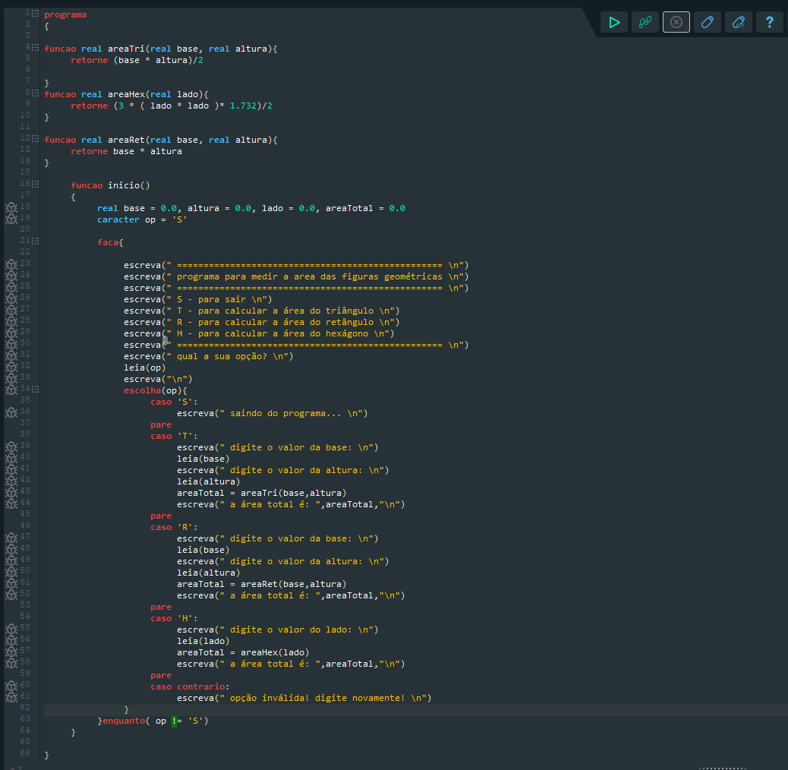
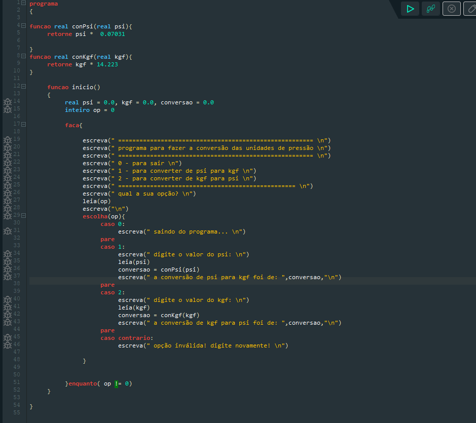
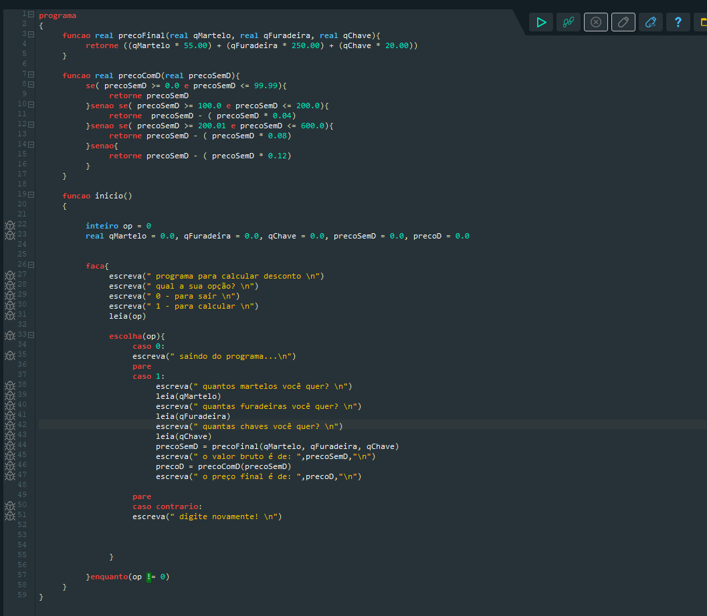
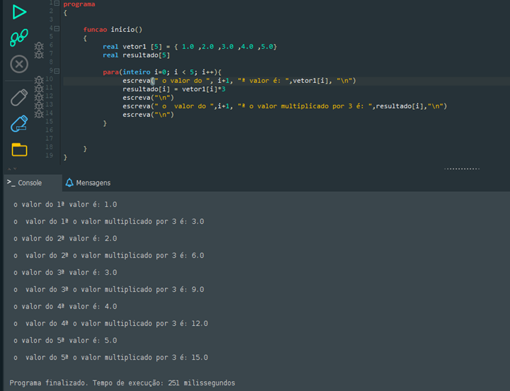
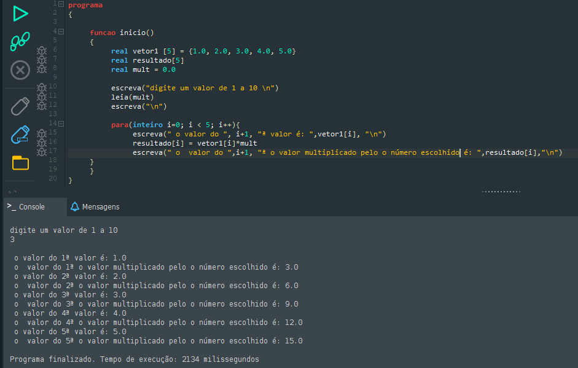
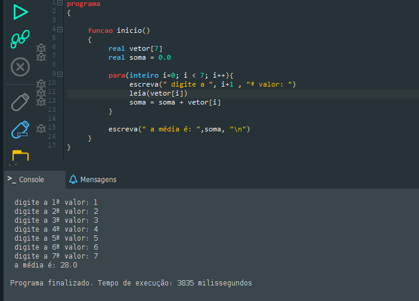

Lógica Computacional
Aplicação de princípios lógicos para resolver problemas e desenvolver algoritmos de forma estruturada e eficiente.
O que é Lógica Computacional?
Segmentos | Utilidades | AplicaçõesA lógica computacional é um ramo da computação que se concentra na aplicação de princípios lógicos para resolver problemas e desenvolver algoritmos.
Ela envolve a organização de ideias, comandos e ações ao programar, permitindo que sistemas computacionais realizem inferências e tomem decisões baseadas em regras lógicas.
A lógica computacional é fundamental para o pensamento computacional, ajudando programadores e cientistas da computação a resolver problemas de forma estruturada.
Fluxograma
Simbologia | Funcionamento| Símbolo | Nome | Função |
|---|---|---|
| Oval | Terminador | Início ou fim do processo |
| Retângulo | Processo | Etapa de execução ou ação |
| Losango | Decisão | Ponto de verificação / pergunta sim/não |
| Seta | Fluxo | Direção do fluxo do processo |
| Paralelogramo | Entrada / Saída | Dados que entram ou saem do processo |


Exemplos de fluxogramas representando etapas de cálculo de média escolar e classificação de embalagens.
Algoritmos
Exemplificação | Funcionalidade | UtilizaçãoUm algoritmo pode ser entendido como uma receita de bolo: você segue um conjunto de passos em ordem para alcançar um resultado final.
A principal função de um algoritmo é organizar e estruturar a resolução de problemas, transformando ideias em etapas claras interpretáveis por computadores.
| Exemplificação | Funcionalidade | Utilização |
|---|---|---|
| Receita de bolo ou cálculo de média escolar. | Organizar passos lógicos para resolver problemas. | Base para fluxogramas e códigos de programação. |
Variáveis e Constantes
Exemplificação | Funcionalidade | UtilizaçãoConstantes
Valor fixo que não pode ser alterado durante a execução do programa.
PI = 3.14
Variáveis
Valor que pode ser alterado durante a execução do programa.
nota = 8 → nota = 10
Por que usar?
Variáveis permitem manipular dados dinamicamente. Constantes garantem estabilidade e evitam alterações acidentais.
Portugol
Exemplificação | Funcionalidade | UtilizaçãoO Portugol é uma linguagem de programação didática criada para auxiliar no aprendizado da lógica de programação com sintaxe próxima do português. Muito usado em escolas e cursos introdutórios.


Funções no Portugol



Vetores no Portugol


